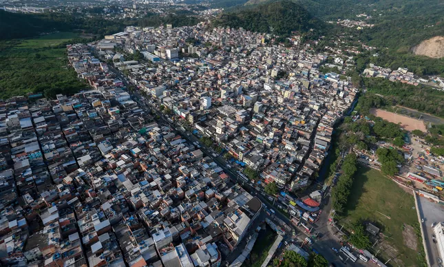
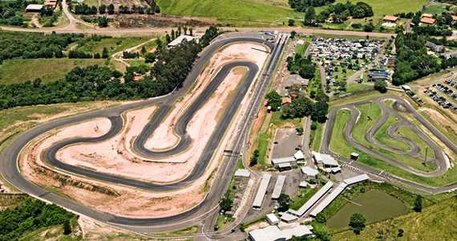

Rio das Pedras

Rio das Pedras recebeu esse nome em razão de um rio que começa na Floresta da Tijuca e corre inteiramente através da favela. Há 30 anos, o rio era limpo o suficiente para crianças brincarem, pessoas tomarem banho e lavarem suas roupas. Atualmente, a favela enfrenta a mesma batalha de saneamento que tantas outras comunidades do Rio. Seu rio se parece mais com um grande esgoto a céu aberto revestido de concreto até encontrar a Lagoa da Tijuca.
Com mais de 55,000 moradores situados em uma área de 90 hectares de terra em expansão, Rio das Pedras pode ser dividida em duas partes principais: uma área norte mais consolidada e uma área sul com infraestrutura mais recente e, por consequência, mais precária. Mas para os moradores as principais divisões dentro de Rio das Pedras são as sub-comunidades conhecidas como Areal 1, Areal 2, Areinha, Casinhas, Pinheiro e Pantanal. As ruas principais são a Rua Nova, Rua Velha e Engenheiro.
Rio das Pedras foi o local de uma das primeiras milícias no Estado do Rio, e permanece livre das facções de tráfico de drogas. Se desenvolvendo ao longo dos anos 80, moradores já haviam observado traficantes tomando o controle em outras favelas, e por isso ao construir Rio das Pedras já estavam cientes e cautelosos sobre o que o tráfico poderia fazer a uma comunidade como aquela. O objetivo original das milícias no Rio era, assim, conter o tráfico de drogas nas favelas, na ausência de medidas de segurança formal adequadas. No caso de Rio das Pedras, os moradores são obrigados a pagar uma taxa de proteção para a milícia, o que tem mantido o tráfico de drogas longe da comunidade. Mas, à medida que as milícias se expandiam, elas também começaram a ser associadas a severas restrições das liberdades individuais dos moradores, fomentando a corrupção e sua particularmente perniciosa forma de violência.
Historicamente atraindo trabalhadores vindos do nordeste, hoje muitos dos habitantes de Rio das Pedras são migrantes que, antes mesmo de chegarem, conheciam um parente ou um amigo que já morava na comunidade e recomendava o local. O status da área como uma comunidade de migrantes ainda permanece, com mais nordestinos chegando através de uma viagem de três dias de ônibus, feita pela companhia Itapemirim, saindo direto do Ceará para Rio das Pedras. A geração original de migrantes foi responsável por tecer a cultura local, que define a comunidade atualmente.
Autódromo do ECPA

Um dos mais novos e modernos do país, o autódromo do ECPA conta com traçado de 2.100 metros. De sentido horário e elevado nível técnico, o circuito possui 9 curvas e 4 retas, tendo subidas e descidas. Seu anel externo também pode ser utilizado como uma pista oval de 1.000 metros. A reta do autódromo é toda iluminada, com arquibancada para 10.000 pessoas, lanchonete e banheiros. Nosso autódromo conta também com 23 box abertos e 10 fechados.
Pinacoteca

A Pinacoteca Municipal foi inaugurada em 2002, integrando a estrutura da Fundação Pró-Memória de São Caetano do Sul. Teve como proposta inicial abrigar uma coleção de arte premiada nos Salões de Arte Contemporânea que ocorreram em São Caetano do Sul entre 1967 e 1980. Pode ser considerada referência entre os espaços culturais do Grande ABC.
Ao longo de mais de uma década, a Pinacoteca possibilitou a realização de importantes exposições, incentivando novos artistas e trazendo para a cidade nomes consagrados da arte contemporânea nacional e internacional a exemplo de Anita Malfatti, Maria Bonomi, Aldemir Martins, Gregório Gruber, Antonio Lucio Pegoraro, Collete Pujol, Hannah Brandt e Iole di Natale. Tornou-se um espaço respeitado e hoje é importante polo de interesse artístico e intelectual no Estado de São Paulo.
Prefeitos
| Prefeitos |
Partido |
Vice |
| Marcos Buzetto (ATUAL) |
Partido Socialista Brasileiro |
Trudpert Alan Leite Riesterer (ATUAL) |
| Antonio Carlos Defavari |
Partido PSDB |
Cristina Pimpinato |
| Aécio Neves da Cunha |
Partido da Social Democracia Brasileira |
Aloysio Nunes |
| José Serra |
Partido PSDB |
Gilberto Kassab. |
Dados Técnicos
Área Territorial 226,657 km²
População estimada 36.233 pessoas
Densidade demográfica 130,16 hab/km²
Escolarização 6 a 14 anos 98,4 %
IDHM (Índice de desenvolvimento humano municipal) 0,759
PIB per capita 37.034,87 R$